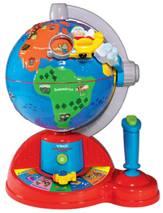
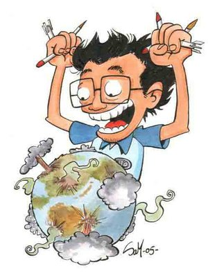

Dominar el mundo
 De: La Frikipedia, la enciclopedia extremadamente seria.
De: La Frikipedia, la enciclopedia extremadamente seria.
| De la serie artes del mundo:
|
| Dominar el mundo
|
|
|
| Se practica desde...
|
Que se rodó 300
|
| Practicantes típicos
|
Científicos, políticos, yo y también el perro de IP anónima
|
| Técnicas básicas
|
El plan - el dispositivo - la organización secreta
|
| Público objetivo
|
El mundo
|
| Dificultad
|
Elevadísima
|
| Nivel de frikismo
|
Cuasi-máximo
|
| Máximo exponente
|
Pinky y Cerebro
|
En realidad, ellos dominan el mundo debajo de la tierra; este es un afiche que repartieron por todo el mundo luego de lograrlo
«¿Oye Cerebro que vamos a hacer esta noche? Lo que hacemos todas las noches Pinky, tratar de conquistar al mundo»
~ Pinky y Cerebro haciendo planes para el fin de semana
«Estamos trabajando en ellou. Hemos dedicadou tiempo ayer por la noche y esta mañana a trabajar en ellou exactamente»
~ José María Aznar (con acento tejano) sobre la dominación mundial
«Harzenspruthen strukenhaimeresc ga!»
~ Niño loco alemán al perder la tecla ESC y no poder terminar de dominar el mundo
«GAAAAAAAAAAAAAAAAARG GARR GARP GAAA-GAARRL»
~ Godzilla cuando no fue al mundial de furbo (nadie sabe que tiene que ver con la dominación mundial, pero se veía muy enojado al respecto)
Sueño megalómano-Statsgirl y encontrar pareja que por desgracia, habitualmente no se consigue (Dominar el mundo, me refiero). Pero recuerda, seguimos en activo.
Personajes como
él han intentado conquistar el mundo
Fallamos tratando de dominar los fregaderos...
Fallamos al poner a la venta la leche con flúor...
Fallamos con lo del papel higiénico de colores...
Pero volveremos a diseñar un plan para apoderarnos de vuestESTE planeta... Algún día...
Gente que ha intentado dominar el mundo
Dominación Mundial
Tema siempre en vogue por las retorcidas mentes maestras de las diferentes sectas, asociaciones y cábalas que conspiran para lograrlo, como la Merkamueble, Marina D'horror (ciudad de vacaciones), Walt Disney, Carrefour y los hoteles de La Costa Lotta, los Rolling Stones, Bush, Bono, MTV, la cadena Wallmart, el grillo en mi hombro que dice que queme cosas, apple, Nintendo, Sony, Microsoft, Coca-Cola, Marvel, los wombats, Albert Wesker, M.A.L.O., Donkey Kong, entre otros. Este es un pequeño extracto, una risión comparado con las terribles organizaciones, como los congresistas americanos del huevo o también el consejo científico de la pasta que planean poner sus garras en esta mierda de planeta.
Requisitos

El Dr. Coloso inventó la
Tabla periódica en un vano y desesperado intento de dominar el mundo
 No, a eso no me referia con un mapa del mundo
- Ser illuminati.
- Alguien que lo organice todo, tenga ganas de mandar y acojone a la gente en sus mensajes por la tele.
- Aburrirse en exceso.
- Tener un buen par de cojones
- Haberse leído todos los artículos de la Frikipedia.
- Un uniforme de militar (siempre lo llevan los dictadores).
- Un emblema (si no se te ocurre ninguno puedes coger uno antiguo que ahora no conozca nadie, cómo hizo Hitler).
- Un ejército uniformado, bien formado y con armas de destrucción masiva y tal... (para acojonar sólo, no queremos matar a nadie).
- Un trono, sillón muy alto, lo que sea que aguante el culo y se gire para los mensajes acojonantes por la tele.
- Un mapa del mundo a ser dominado, mientras más grande mejor. No valen los mapamundis inflables porque no soportan las chinchetas.
- Una mascota pequeñita para ir acariciando durante los mensajes mentados. Como mascota lo mejor es tener un gnomo malvado o un Conejito Malvado.
- Un ayudante que puede ser un profesor chiflado, uno de cada 2 ayudantes
solo sirven para golpearlos por tus errores suelen ser idiotas.
- Comprar una isla con un volcan en medio, crear una base subterranea y nombrarla con un nombre malvado (Isla Maldad, Isla de la Muerte y demas mariconadas)
- Tener una Death Note
y ser KIRA.
- Componer y cantar una canción propia (lo han hecho muchos malos y les ha quedado muy bien).
- Un plan (ejemplos abajo).
- Realizar el plan (si no para qué?).
- Que salga bien y que resulte útil (eso es lo más importante).
- Una mascota super-feroz y super fuerte, especialmente nacida de mutaciones genéticas.
- Un enemigo super fuerte y super hábil en todo. Todos los genios de mal tienen uno, si no tienes, serás el hazmerreir de toda la comunidad malvada.
- Ser Aizen.
- Una risa maléfica muy buena y bien producida, nada de efectos sonoros baratos.
- Un gesto habitual que hagas siempre o casi siempre, como el SR. Burns eso de "excelente" (las frases también sirven)
- Una guarida no tan secreta, para así montar trampas a tus enemigos que incrédulos, se creerán la octava maravilla por haber encontrado tu "super guarida secreta".
- Mas de una guarida secreta, porque casi siempre las destruyen.
- Un monóculo.
- Un peinado extraño, también pueden ir bien con bigotes, perillas y barbas.
- Un ayudante que solo sepa confundirte mas.
- Una tajo o herida en la cara o manos, eso demuestra de lo que es capaz tu "enemigo"
- Un pasaje secreto en tu guarida, de preferencia que sea de esos a base de tubos, para disfrutar el desenso.
- Una nave o base en el espacio, eso es escencial en caso de que la tierra ya no sea muy segura.
- Robots que liquiden a tus enemigos.(les puedes poner tu nombre y luego la palabra bot, ejemplo:juan= juanbots)
- Un científico que te ayude en tus absurdos dilemas cientificos.
- Un gran misil que podría destruir el mundo pero que nunca acabaras de construir.
- Una voz peculiar (muy aguda, muy grave, hacer muchos gallos, etc).
- Un sobrenombre imponente y hortera, como miguelito o Bushinator.
- Un gran número de súbditos con nociones básicas en artes marciales y pistolas supersónicas que congelen a tus enemigos (hay que tener en cuenta el gasto de comprar pistolas supersónicas en el mercadillo, aproximadamente 5€ la docena, las buenas van a 10)
- Prescindir de los ejércitos de monos titis ya que con una sola navaja de Albacete de esas que te regalan en las comuniones podrían sublevarse y conquistar el mundo, por su cuenta, sin enterarse de que tu eres el jefe que quiere conquistar.
- Haber jugado mucho a juegos de acción, aumentan la mala ostia y provocan ataques violentos, si sabes controlarlos puedes dirigir toda tu ira contra el mundo ganando tiempo y fama en cuestión de días.
- Un kit de Dominación Mundial (con mando para lanzar la bomba superultraatómica teledirigida y una peluca de regalo mas $20 leros seran 2 pelucas) ¡Si no tienes un kit de Dominación Mundial serás el hazmereír de todas las mentes perversas!
- Un Campo de Dardos donde ponen una foto de su enemigo y tirarle los dardos y hacerlo pedazos, esta en la tiene donde esta el kit de Dominación Mundial
- Un parche en el ojo izquierdo nunca viene mal.
- Depilarse una guarrería en el "jardín".
- Fi-fi-fi-filipinos
- Hablar gñapés
- Una piscina con pirañas
- Un "mini tu"
- Un satelite espia con el que poder observar a tus enemigos para pillarlos desprevenidos
- Un láser que se mueva muy lento para dejar que tus enemigos escapen
- Un pedazo pantallote de plasma para poder hablar con los lideres mundiales
- A Pikachu
- Guaridas secretas en cada tipo de paísaje que exista (en el desierto, el polo norte, la luna...)
- Botiquin
- Un monticulo sin vidrio
- Un perro en monociclo
- Hacer un pacto con las Ardillas
- Pertenecer a Akatsuki
Precauciones
Otro intento frustrado...
No imitar nunca a ninguno de estos a la hora de dominar el mundo:
- Lane Trola
- Hitler
- Mussolini
- Franco
- Pinochet
- César
- A mí (Lo intente, pero no me funciono)
- Cañita Brava
- Luixy Toledo
- Leonardo Dantés
- El risitas
- El cuñao del risitas
- Coyoacan Joe
No confundir a este rebaño con otros que también casi han conquistado el mundo (Papá Noel, Shin Chan McDonald's, etc, más ejemplos abajo).
Tener un ejercito de esbirros ya sean de manga, rol o alguna otra de tus boludeces que les gusten.
Dominacion mundial absurda
 Ilustración del típico friki megalómano
Todo megalómano ha ideado alguna vez un plan jabón. La cosa sería así.

|
Si me hago pasar por limpiador, puedo entrar en el congreso de los diputados. Con la pastilla de jabón, enjabonaría todos los escalones del palacio de congresos. Entonces, podría irrumpir allí y declarar un golpe de estado. Todos saldrán corriendo y la policía entrará, entonces resbalarán, tropezarán y morirán al partirse el cuello. Nadie podrá impedirmelo. Una vez domine España, le cambiaré el nombre por (nombre del megalómano)nia/landia (ejemplo: Fernandonia/Franciscolandia). Entonces, con toda España en mi poder, podré entrenar una tropa de limpiadores-espías armados con pastillas de jabón que repitan la operación en Francia, Portugal, Inglaterra... Y podré ir sumando países a mi imperio. Entonces, con la táctica del jabón conquistaré Rusia, y con sus armas nucleares amenazaré Japón y China. Si no se rinden, utilizaré de nuevo la estrategia de la pastilla de jabón. Entonces atacaré los EE.UU. y, cuando se reunan para decicir como defenderse de mi, me infiltraré con una pastilla de jabón y... UAHAHAHA!!!! EL MUNDO SERÁ MÍO!!!!!!
|

|
| Pensamientos de un friki imaginando su dominación mundial
|
Después de esto es cuando el profesor de Física y toda la clase le mira fijamente y sus planes fracasan. Por otro lado, los políticos son expertos conspiradores y paranoicos, y ya pensaron en este plan, por ello mandaron poner alfombras en los escalones del congreso (melón).
Todos los planes ideados por frikis megalomanos son una birria y están destinados al fracaso. Sobretodo el de IP anónima. Todos los planes menos el mio. El mio está muy bien. Por eso no os lo voy a decir.
Se ha descubierto recientemente que el primer ser preocupado en este tipo de planes fueron las Gallinas.
Planes de dominacion absurda
- Llevar todas las alfombras de los sitios en que viven los presidentes a la tintorería y fregar con jabón + don limpio + lejía + amoniaco
- Infiltrarse en los partidos políticos de cada país, prometiendo cosas como economia, salud, etc... Una ves arriba de dicho partido y de la presidencia del país declarar el dia del pikachu asesino y convertir el país en cuestion en frikilandia e ir uniendo países que conquistemos.
- Crear un ejercito de niños obsesionados con pikachus, pintarles de amarillo y usarlos como bombas escudo.
- Vestirme de morado y preguntar donde esta mi planeta
- Pegar saltos cuanticos mientras bailo con presidentes de gobiernos
- Crear una cancion del verano que atrofie el cerebro, como microfonos o hijo de puta hay que decirlo mas
- Conseguir los poderes magicos de una bruja y convertir a los que se opongan en ranas o animales de colores llamativos, amarillo, morado, etc...
- Invadir planetas por medio de la panspermia en barriles de bambu
- Hacer creer a Voldemort que Harry Potter conspira para matarle con la ayuda de los jefes de estado. Cuando les haga el abra y su cabra (y mueran), sólo tienes que ir de país en país.
- Trucar el colisionador de hadrones...y amenazar al mundo si no me eligen como lider mundial
- Bombardear las capitales de los países con toneladas de porno
- Matar al que escribio lo de arriba, asi cundirá el miedo
- Vender todas tus pertenencias y con el dinero recogido comprar todas las destileras del mundo y silenciarlas, cundira el panico sin cerveza.
- Amaestrar al penedector para que destruya las sedes de gobierno con su lefa acida
Uno de los intentos más serios de dominar el mundo y que se haya registrado en los ultimos tiempos, ocurrio aquel fatidico día en el que sirenoman pierde una batalla que sostuvo con el chico percebe (quien previamaente habia abandonado las filas de los superheroes para enlistarse en las de los super villanos al lado de mantarraya y la burbuja sucia). Este, pronuncia un discurso en el que le recuerda a sirenoman que una de las reglas entre super heroes y supervillanos es que el vencido debe ceder a las exigencias del vencedor. Sirenoman acepta su derrota y pregunta: esta bien ¿qué es lo que quieres?. El chico percebe, como todo super villano recien iniciado es aconsejado por uno de sus secuaces: el temible mantarraya "dominar el mundo, dile que queremos dominar el mundo". Claro, algunos super villanos tienen otras prioridades antes de querer dominar el mundo.
Véase también
Enlaces externos
Autor(es):
- Krusher
- Nexo
- Fordus
- Zeysoft
- Mu
- Kai
- Cortocircuito
- Joim
- Koutarou
- Jorror
Frikipedia 2005-2016, Licencia
GFDL 1.2 - Extraído por FrikiLeaks